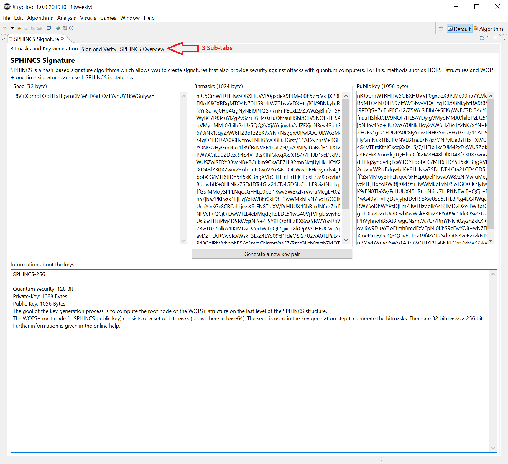
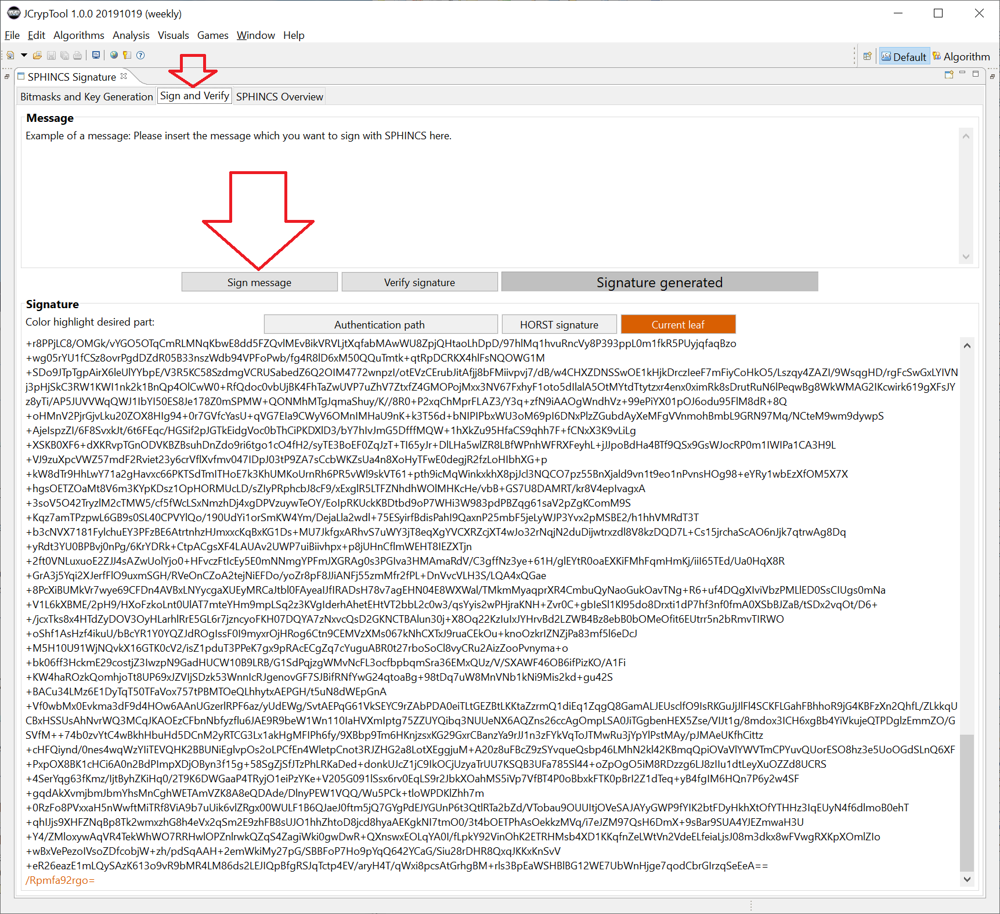
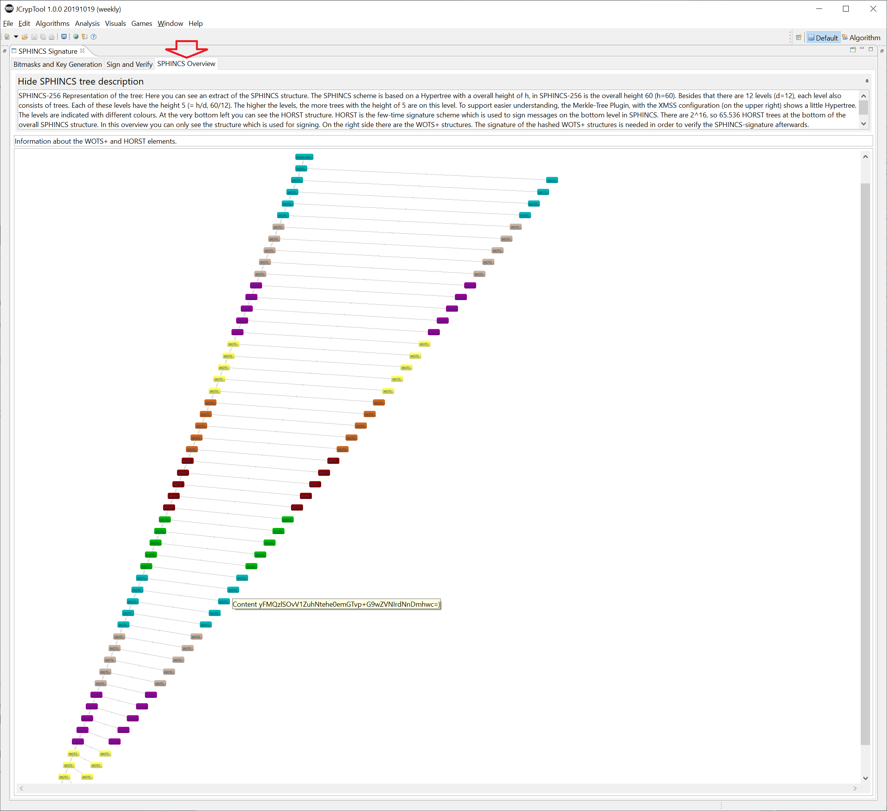

This plugin visualizes the quantum computer resistant signature procedure SPHINCS (in the variant submitted for standardization SPHINCS-256).
The plugin can be started via the menu Visuals or via the Crypto-Explorer in the tab Visuals.
SPHINCS is safe, even if quantum computers work: This is why it is one of the so-called post quantum computer procedures (PQC). SPHINCS-256 and Merkle signatures can be used to create secure digital signatures. A good and up-to-date overview of PQC procedures can be found in Wikipedia [1,2]. WOTS in the variant WOTS+ is a component of both XMSS and SPHINCS.
In the meantime, SPHINCS [7,8] reached the 2nd round of the NIST competition for PQC procedures (NIST PQC competition) [3,4] (started in December 2016) (as of Jan 30, 2019, variant SPHINCS+).
The security of SPHINCS, like that of Merkle signatures, is based only on the security of the hash functions used and therefore belongs to the hash-based signature functions (HBS). In contrast to Merkle signatures, however, SPHINCS is stateless, which is a great advantage for the security of most applications. In general, the key length for QC-resistant signature procedures (also known as post-quantum signature procedures) is significantly longer than for conventional signature procedures.
The excellent paper [0] of 2014 summarizes SPHINCS as follows: "Signatures are 41 kB, public keys are 1 kB, and private keys are 1 kB. The signature scheme is designed to provide long-term 2^128 security even against attackers equipped with quantum computers."
The abbreviation SPHINCS means: Stateless Practical Hash-based Incredibly Nice Collision-resilient Signatures.
Note: In addition to the older method SPHINCS implemented here, the newer PQC method SPHINCS+ from 2017 is also implemented in JCT.
1) Overview SPHINCS structure
1.1) Visualization of the SPHINCS structure
1.2) Key generation
1.3) Signature creation
1.4) Verification (signature check)
2) Manual (how to use the plugin)
3) Further information, references and sources
SPHINCS generates a tree built from several structures, which in turn are structured like a tree. This complete structure is called hypertree or SPHINCS structure.
In SPHINCS there are two types of tree structures, WOTS+ structures and HORST structures. WOTS+ is a one-time signature procedure used in SPHINCS to sign underlying structures. HORST is a multiple signature procedure that is used at the lowest level to sign messages.
A SPHINCS-256 structure has the total height h=60. Each substructure, both WOTS+ and HORST, consists of a tree – each with the height h/d=5, where d=12 is the number of levels. SPHINCS-256 is an instantiation of SPHINCS+ (and thus defines these parameters; in SPHINCS+ as a concept, these parameters are variable). This is analogous to RSASSA-PKCS1-v1_5-1024-SHA1, for example, an instantiation of the RSA algorithm that specifies exactly how RSA is to be used for signing.
Kudelski Security summarized the tree structure this way (Kudelski Security submitted "Gravity-SPHINCS" to the NIST competition, a variant of SPHINCS which – unlike SPHINCS+ – did not make it to the second round):
The SPHINCS signature scheme is not of the simplest kind, and is hard to understand by only reading its informal specification. So instead of trying to explain it fully, we’ll just describe its general structure, which can be seen as the combination of four types of trees:
The following graphic shows the SPHINCS hypertree. This hypertree can also be seen (partially) in the JCT plugin in the "SPHINCS Overview" tab. The lowest of the 12 layers is called the "first" layer.


The following graphic zooms into a part of the above hypertree: A WOTS+ structure consists of several WOTS+ public key nodes, each of which results in a key pair:

Each WOTS+ structure is a binary hash tree and each contains 2^(h/d) = 2^5 = 32 nodes.
The following sections explain the 3 main operations in more detail. Then the operation of the plugin is explained by its 3 tabs.
The key generation of the SPHINCS procedure aims to calculate the public key PK of the root node of the entire SPHINCS structure. This PK is also a hash value.
When the key generation operation is complete, you have the WOTS+ key pair of the overall SPHINCS structure. The public key of this WOTS+ key pair is the root node of the SPHINCS structure.
For this purpose, two secret keys SK_1 and SK_2, each 256*256 bits in size, are first created. SK_1 is used for pseudo-random key generation. SK_2 is used to make the index of sign (function undefined introduced in [0, page 10, second paragraph]; meaning the index of an OTS key pair in a tree) unpredictable and to randomize the hash value of the message.
In addition, p n-bit long bitmasks Q_i are generated, which are used for each WOTS+ structure and each HORST structure. All Q_i are concatenated into the top public key (PK of the root node). Further details in [0, page 10].
The WOTS+ key pairs of the individual levels are then generated. Therefore, a seed is created for each key pair, which contains the address A of the key pair and SK_1.
It applies:
SPHINCS private/secret key SK = {SK_1, SK_2, Q};
SPHINCS public key = {PK1, Q}.
Table 1 in [0, page 19] shows the size of the keys in SPHINCS-256:
Private/Secret Key = 1088 Byte;
Public Key = 1056 Byte.
How many seeds are there? In SK one, but almost everything is created pseudo-randomly from short seeds.
How many bitmasks are there? 32 256-bit masks.
A message M is signed with the SPHINCS private key SK.
For this purpose a randomizer, i.e. a random R = (R_1, R_2) is formed and a randomized message digest D is calculated from M, SK_2 and R_1. This hash D is then signed.
The HORST key pair at the selected address is used for signing. The HORST signature is calculated from a seed, the hash value D, and HORST bitmasks.
The whole SPHINCS signature ("the full SPHINCS signature Σ") contains the HORST signature, an index i, random bits R_1, an XMSS_MT signature, and an authentication path through all levels. The XMSS_MT signature consists of d WOTS+ signatures.
The index is selected deterministically, since a structure of this size does not have a reliable chance to determine the indices. The WOTS+ key pair with the address A_0 is used to sign the HORST public key.
The SPHINCS signature Σ therefore consists of (i; R_1; σH; σW,0; Auth_A_0;...; σW,d-1; Auth_A_d-1), where (σH = HORST signature, σW,i = WOTS+ signature).
The following graphics shows the interaction of the parameters. Further details in [0, page 11].

For verification, the SPHINCS public key (i.e. the PK of the root node), the message M and a complete SPHINCS signature are required.
First, a hash value D is formed from the message and the random value R1 (contained in the signature): D = H(M, R1).
Hash value D and the HORST bitmasks Q_HORST contained in the public key PK are used to calculate the HORST public key using the HORST verification function (D, σ_HORST, Q_HORST). If the verification of the HORST signature included in the SPHINCS signature fails, then the SPHINCS signature is also invalid.
With the WOTS+ signature contained in the SPHINCS signature, the public key of the first WOTS+ structure PK_W,0 is calculated. The sheet of this first level is then calculated.
This leaf is used to calculate the root node (Root_0) of the first level. This process is repeated up to the top level of the SPHINCS structure ("repeated for layers 1 to d-1"), but with two differences:
These two special features are only relevant from the second level of the SPHINCS structure.
After calculating the authentication path, you get the root node of level d-1 (Root_d-1). This is then compared with the first element PK_1 in the SPHINCS public key PK.
If the two keys are identical, the verification succeeds; if the two keys are not identical, the verification fails. Further details in [0, page 11 and 12].
This visualization explains the signature procedure SPHINCS-256 and the SPHINCS structure behind it. In addition, the 3 operations key generation, signing and verification can be performed.
In the instantiation SPHINCS-256 the parameters d=12, h=60, w=16, n=256 and m=512 are already defined (see table 1 in [0, page 19]).
In the 1st tab, the components of the used keys (seed, bit masks) and the generated public SPHINCS key PK are displayed. In addition, information about the key length is displayed at the bottom. The keys created will then be used for signing and verifying in the second sub-tab.
Each time you press the button Generate key pair again, a random seed (bitmasks) and a new public key PK will be generated.
The following sub-tabs 2 and 3 only work after in sub-tab 1 the keys have been generated and the hypertree has been built.
In the 2nd sub-tab, you can enter a message (or keep the default) and then sign it with SPHINCS (prerequisite is, that keys have been created in advance in the 1st sub-tab). Afterwards you can verify the signature.
Please enter a message text (or leave the default) and then press the button Sign message.
The following 3 buttons can be used to highlight different parts of the signature Σ:
When you press the button Verify Signature, the signature is verified and the result is displayed in the middle (in green if the message, public key and signature match, so the validation is positive).
As long as you don't change anything, the verification will always succeed (ok). But if you change the message and click again the button Verify Signature, the verification will fail (then the verification result will appear in red).
Currently the signature values cannot be changed in this sub-tab. If you generate again new keys in the first sub-tab, they will be used here not until you sign the message again.
The 3rd sub-tab graphically displays a section of the hypertree and gives information about the SPHINCS structure. If the mouse pointer is over an element, its data is displayed as balloon text (tooltip). If you click on the element, the data is also displayed in the output field at the top (below the description).
The individual layers of the structure are color-coded so that you can see which element belongs to which layer. With the mouse wheel you can zoom in and out of the tree.
This plugin only implemented the SPHINCS-256 variant. Other variants are SPHINCS+ and Gravity-SPHINCS plus their instantiations.
There is an official website about the SPHINCS algorithm, where you can find papers, presentations and software about SPHINCS.
Additional Information about post-quantum cryptography (PQC) and SPHINCS signatures can be found at:
More plugins in JCrypTool, which are related to quantum-computer safe signatures: